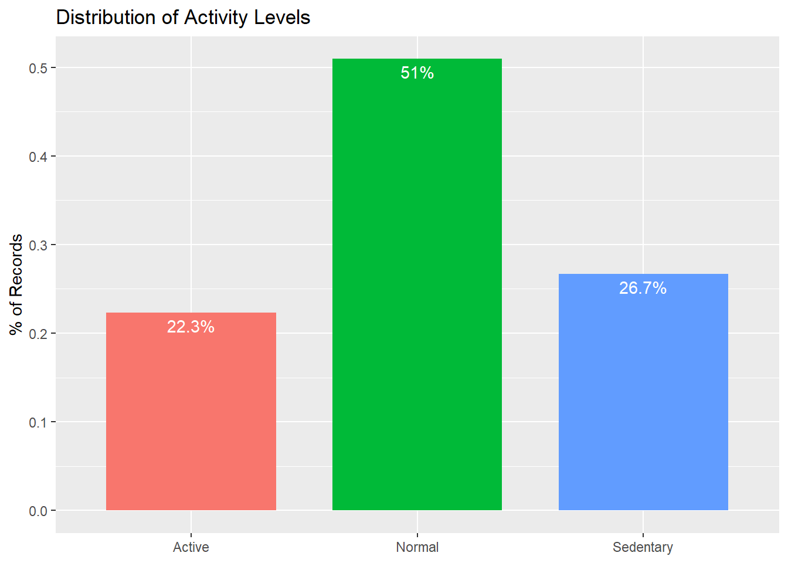

library(tidyverse)
library(data.table)
library(viridisLite)
library(viridis)
library(ggplot2)
library(htmltools)
# Read csv files
daily_activity_clean <- read_csv("daily_activity_clean.csv", show_col_types = FALSE)
hourly_activity_clean <- read_csv("hourly_activity_clean.csv", show_col_types = FALSE)summary(daily_activity_clean$TotalSteps)## Min. 1st Qu. Median Mean 3rd Qu. Max.
## 0 3818 7441 7671 10734 36019Users took an average of 7671 steps in a day.
summary(daily_activity_clean$Calories)## Min. 1st Qu. Median Mean 3rd Qu. Max.
## 52 1834 2144 2313 2794 4900Users burned an average of 2313 Calories a day.
summary(daily_activity_clean$TotalDistance)## Min. 1st Qu. Median Mean 3rd Qu. Max.
## 0.000 2.645 5.265 5.513 7.720 28.030Users travelled an average distance of 5.513 km (3.4 mi) a day.
summary(daily_activity_clean$VeryActiveMinutes)## Min. 1st Qu. Median Mean 3rd Qu. Max.
## 0.00 0.00 4.00 21.26 32.00 210.00Users spent an average of 21 total minutes in very active activity a day.
summary(daily_activity_clean$FairlyActiveMinutes)## Min. 1st Qu. Median Mean 3rd Qu. Max.
## 0.00 0.00 7.00 13.62 19.00 143.00Users spent an average of 14 total minutes in fairly active activity a day.
summary(daily_activity_clean$LightlyActiveMinutes)## Min. 1st Qu. Median Mean 3rd Qu. Max.
## 0.0 128.0 199.0 193.6 264.2 518.0Users spent an average of 194 total minutes (about 3 hours) in lightly active activity a day.
summary(daily_activity_clean$SedentaryMinutes)## Min. 1st Qu. Median Mean 3rd Qu. Max.
## 0.0 729.0 1057.0 989.3 1226.0 1440.0Users spent an average of 989 total minutes (about 16 hours) in sedentary activity a day.
#### 5. How active are the participants?
 WHO: 150–300 minutes of moderate-intensity aerobic physical activity; or at least 75–150 minutes of vigorous-intensity aerobic physical activity. Active: ModerateActiveMinutes > 300 or VeryActiveMinutes > 150 Normal: ModerateActiveMinutes >= 150 & ModerateActiveMinutes <= 300) or (VeryActiveMinutes >= 75 & VeryActiveMinutes <= 150) Sedentary: ModerateActiveMinutes < 150 or VeryActiveMinutes < 75
About half of participants have activity level considered normal, about a quarter are active and a quarter sedentary.
About 65% of days respondents met 10,000 steps goal.
## `geom_smooth()` using method = 'gam' and formula 'y ~ s(x, bs = "cs")'Intensity and Calories are directly related. The more intensity the exercises are, the more calories are burned.
print(hourly_intensity_plot <- hourly_activity_clean %>%
group_by(hours= hour(ActivityHour), wday) %>%
ggplot(aes(hours, wday)) +
geom_tile(aes(fill = TotalIntensity), colour = "white") +
scale_fill_distiller(palette = "YlOrRd", direction = 1) +
scale_x_continuous(breaks = 0:23) +
theme_minimal() +
theme(
legend.position = "bottom",
legend.key.width = unit(2, "cm"),
panel.grid = element_blank()
) +
scale_fill_viridis(option = "magma",
direction = -1,
name = "TotalIntensity") +
labs(title = "Total Intensity by Hour of Day", x = "", y = "") +
coord_equal()
)## Scale for 'fill' is already present. Adding another scale for 'fill', which
## will replace the existing scale.Time of day users performed most intensive activities are Saturdays, Fridays and Wednesdays between noon and 5 pm.
The marketing recommendations concluded from the insights of this case study should be focused on providing features, notifications, reminders for fitness tracking with an aim of encouraging physical activity.
The three possible marketing recommendations for Bellabeat are as follows:
Digital campaigns that show Bellabeat Le prioritizing tracking tools to keep users comparing , send reminders to get upand get moving., tracking menstrual cycle, track meditations and sleep habits, as a stylish, classic accessory with full fitness tracking features. Top features: breathing, notifications and calls, workouts Standard features: clock, faces, sleep, timer, health metrics, Missing features: music, GPS signal, payment, size
Notifications/email reminders that show the benefits of physical activity. The
Prioritize sharing insights through dashboards with the user so they can make decisions on their health.
The fitness trackers may be motivating users to develop healthy habits and increase wellness by providing metrics on their activities. * We can focus on the advantages of using Bellabeat app * Create more reporting, comparing and trend options for activity tracking, METs vs. calories, etc. * More charts or graphs comparing exercise sessions. * Create insights such as “this is the longest distance you’ve run” or “this was your third fastest 5k”. * Filter exercise types such as elliptical, running, walking, etc. * Adding a feature to remind users when they have been idle for a period of time. * For users that want to lose weight or burn more overall calories, adding a reward or notification to celebrate would be very motivating.